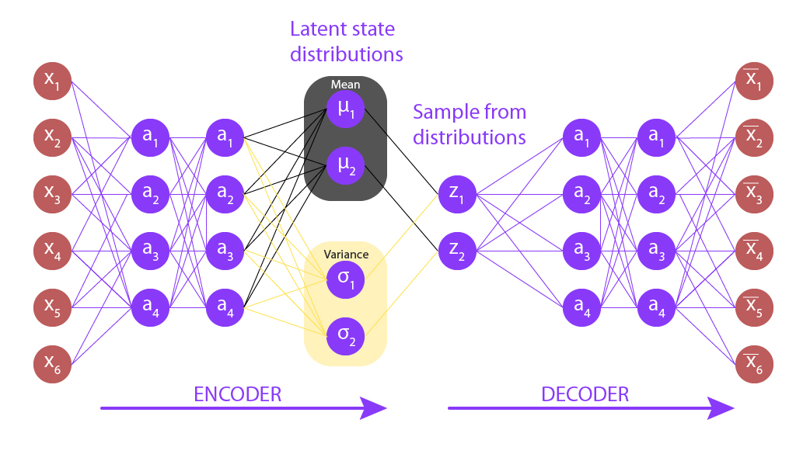
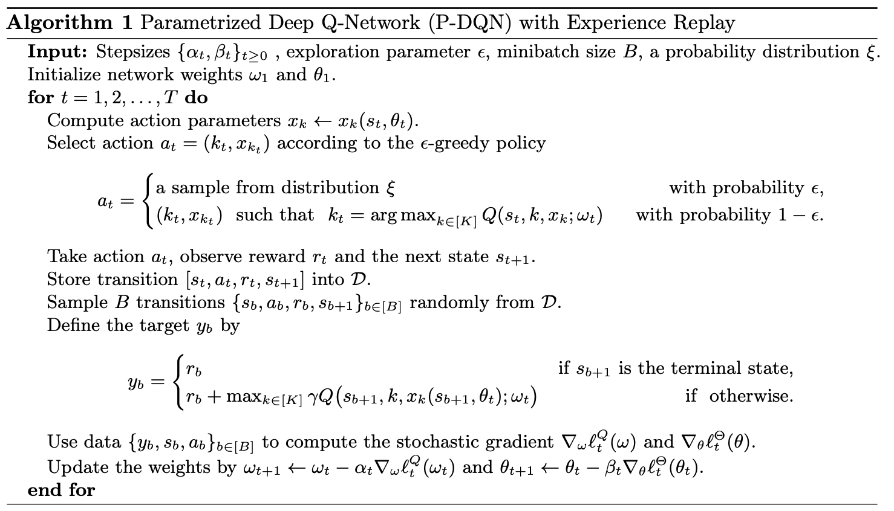
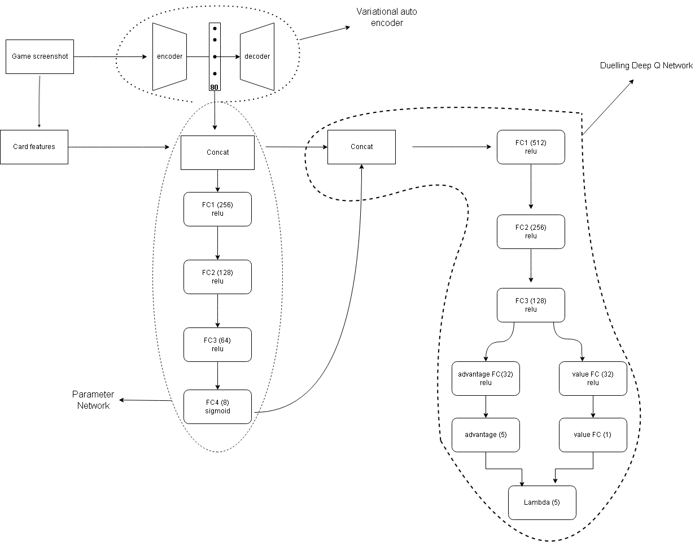
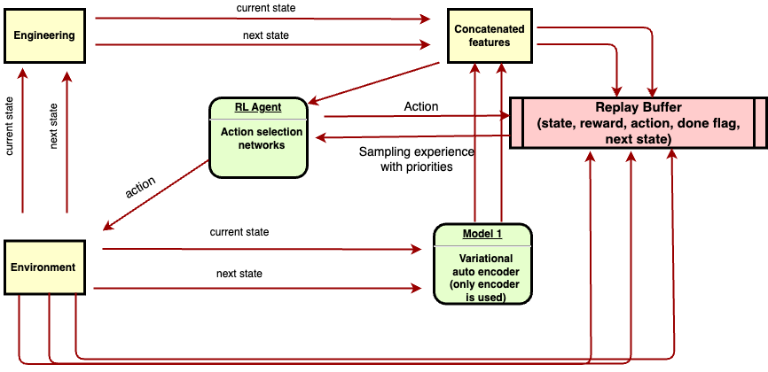

Clash Royale AI
Reinforcement learning system that learned to play the game Clash Royale using screen pixels and engineered features.
Introduction
Clash Royale is a free-to-play real-time strategy video game developed and published by Supercell. The game combines elements of collectible card games, tower defence, and a multiplayer online arena.
 The objective of the game is to destroy the most opposing towers, with the destruction of the "King's Tower" being an instantaneous win. After three minutes, if both of the players/teams have an equal number of crowns or none at all the match continues into a 2-minute overtime period and the player who destroys an opposing tower wins instantaneously. If no towers are destroyed during overtime, there is a tiebreaker, where all towers rapidly lose health, and the tower with the least health is destroyed. If two towers have the same health, there is a draw.
The objective of the game is to destroy the most opposing towers, with the destruction of the "King's Tower" being an instantaneous win. After three minutes, if both of the players/teams have an equal number of crowns or none at all the match continues into a 2-minute overtime period and the player who destroys an opposing tower wins instantaneously. If no towers are destroyed during overtime, there is a tiebreaker, where all towers rapidly lose health, and the tower with the least health is destroyed. If two towers have the same health, there is a draw.
Reinforcement Learning
Similar to its definition in cognitive science, reinforcement learning is a branch of machine learning where the agent learns to complete a given task through trial and error. The learning happens solely based on the reward signal (or punishment) where the agent learns to maximize its future rewards.The agent takes an action in the simulated environment based on its current view of the environment (state) and it then recieves a reward (positive or negative). This cycle is repeated until convergence.
Reinforcement learning problems are usually formulated as a Markov Decision Process. In mathematics, a Markov decision process is a discrete-time stochastic control process. It provides a framework for modeling decision making in situations where outcomes are partly random and partly under the control of a decision maker. This problem is however a Partially observable markov decision process, simply meaning our agent has access to limited game information (e.g not knowing the current cards our opponent has as also in poker).

Reinforcement learning loop
Algorithms
There are several algorithms in reinforcement learning. This problem requires a function approximator (estimating future rewards) so the algorithms used will fall under Deep Reinforcement Learning. Papers of focus:- Deep Q Networks (DQN). In this paper the authors devise an algorithm capable of perfoming at superhuman levels at atari games while only receiving the screen pixels as input.
- Deep Deterministic Policy Gradients (DDPG). In this paper the authors used the underlying success of the DQN algorithm to create another algorithm to help deal with continuous action spaces as opposed to the discretization that occurs in order to use DQN.
- Parameterized Deep Q Network (P-DQN). In this paper the authors use the ideas of both DQN and DDPG to integrate them both into one. This algorithm handles two-step action selection where one action is discrete and the other is continuous.
- World models. In this paper the authors use a generative neural network that can be trained quickly in an unsupervised manner to learn a compressed spatial and temporal representation of the environment.
Because of this limitation, I realized passing only the pixels to the agent would result in an extremely long training (that is if convergence is even possible). So i decided to engineer some features based on the game screen. These features will then be passed to the agent as opposed to just the pixels. The features come in two sets; one comes from a variational autoencoder and the other from me using computer vision techniques. More on this later.
Methodology
Taken from the "world models" paper, I implemented a Variational Autoencoder (VAE) to represent the environment in a temporal way. A variational autoencoder (VAE) provides a probabilistic manner for describing an observation in latent space. More specifically, the input data is converted into an encoding vector where each dimension represents some learned atrribute about the input. The "variational" part comes in where we formulate our encoder to describe a probability distribution for each latent attribute.

Variational Autoencoder architecture
- Encoder - Takes input (image in this case) and converts into a n-dimension vector.
- Decoder - Takes the n-dimensional vector as input and tries to reconstruct original input.
Training the VAE
A variational autoencoder is trained in an unsupervised way, meaning no labels will be needed to train the model.Before training, I need to collect images from the environment. So after implementation of a random agent to interact with the environment, I collected 500K images all of which to be used to train the VAE. These images were then uploaded to an s3 bucket to be used with the AWS SageMaker.
The VAE used here follows similar architecture as described in the paper with slight changes. After hyperparameter tuning, the game images were best reconstructed using a 64-dimension encoder.
Loss functions:
- Kullback-Leibler divergence: a measure of how a probability distribution differs from another. Our goal here is to minimize this distance. (For the encoder)
- Correlation loss (r loss): mean squared difference between the true image and generated image. (For the decoder)
def compile(self, learning_rate, r_loss_factor):
self.learning_rate = learning_rate
### COMPILATION
def vae_r_loss(y_true, y_pred):
r_loss = K.mean(K.square(y_true - y_pred), axis = [1,2,3])
return r_loss_factor * r_loss
def vae_kl_loss(y_true, y_pred):
kl_loss = -0.5 * K.sum(1 + self.log_var - K.square(self.mu) - K.exp(self.log_var), axis = 1)
return kl_loss
def vae_loss(y_true, y_pred):
r_loss = vae_r_loss(y_true, y_pred)
kl_loss = vae_kl_loss(y_true, y_pred)
return r_loss + kl_loss
Model was trained using the Adam optimizer for 4 hours and the weights were downloaded from sagemaker to my local machine for testing. I began experimenting with the learned features of the VAE. I was impressed with results as the model was able to modify time on the image, the health of towers, the number of towers, the arena being played in, etc. One important thing the model could not learn was the position of the troops and understandably so due to the relative size of the troops, however I noticed dark shadows where troops ought to be so i still went on with the model.
Features Engineering
While i would love to depend on the features gotten from the VAE, I went on to craft some features that turned out to be beneficial to the agent. These features were broadly grouped into two:- Hand features: these are features that are gotten based on the 4 current cards the agent holds. Every card's stat is stored in a lookup table (Pandas). examples; card type, damage per second, hitpoints, speed, etc.
- Game features: these are features that are gotten from the game. examples; current time, x2 elixir (Boolean), XY position of troops on the board, number of towers.
class ClashScraper:
def __init__(self, cards_filename: str):
self.cards = self.get_card_names(cards_filename)
self.web_host = "https://statsroyale.com/card/"
@staticmethod
def get_card_names(json_file: str) -> list[str]:
all_cards = []
with open(json_file, 'r') as j:
contents = json.loads(j.read())
for card in contents['items']:
all_cards.append(card['name'])
return all_cards
def set_index(self, card: str, df: pd.DataFrame) -> pd.DataFrame:
card_col= pd.Series([card]* df.shape[0])
df["name"] = card_col
df.set_index("name", inplace=True)
return df
def get_card_stats(self, card: str) -> None:
response = requests.get(self.web_host+card.replace(" ", "+"))
data = pd.read_html(response.text)[0]
self.set_index(card, data)
data.to_csv(f'card_info/all_stats/{card}/{card}.csv')
def run(self):
found = 0
error = 0
for card in self.cards:
try:
self.get_card_stats(card)
print('finished', card)
found += 1
except Exception as e:
print('could not find table for spell', card)
error += 1
print('done')
print(f'found {found} cards and could not find tables for {error} cards')
Various methods were used to extract these features such as template matching using OpenCV (for current hand identification, troop locations, total number of towers, etc.) and optical character recognition using EasyOCR (for tower health reading, time, and total number of elixir).
class Features:
def __init__(self):
self.scaler = StandardScaler()
self.card_id = {"giant": cv2.imread("assets/giant_id.png",0),
"fireball": cv2.imread("assets/fireball_id.png",0),
"arrows": cv2.imread("assets/arrows_id.png",0),
"goblins": cv2.imread("assets/goblins_id.png",0),
"knight": cv2.imread("assets/knight_id.png",0),
"minions": cv2.imread("assets/minions_id.png",0),
"prince": cv2.imread("assets/prince_id.png",0),
"archers": cv2.imread("assets/archers_id.png",0),}
deck_stats = pd.read_csv("card_info/cards.txt", index_col="name")
self.deck_stats = pd.get_dummies(deck_stats)
self.card_stats = ClashDataLoader().load_data()
self.tower_stats = pd.read_csv("card_info/towers.txt", index_col="type")
self.grayscale = lambda x: cv2.cvtColor(x, cv2.COLOR_BGRA2GRAY)
def get_curr_hand(self, img):
curr_hand = []
img = self.grayscale(img)
for card, template in self.card_id.items():
res = cv2.matchTemplate(img,template,cv2.TM_CCOEFF_NORMED)
threshold = 0.8
loc = np.where( res >= threshold)
if len(loc[0]) == 0: ...
else:
curr_hand.append(card)
return curr_hand
def get_card_features(self, img, params):
time = params['time']
elixir = params['elixir']
enemy_positions = params['enemy_positions']
#Filling up max_enemies array
max_enemies = np.zeros((30, 2)) #able to recognize a maximum of 30 enemies troops
if len(enemy_positions) > 0:
for i in range(len(enemy_positions)):
if i == 30:
break
max_enemies[i] = enemy_positions[i]
max_enemies = self.scaler.fit_transform(max_enemies).flatten()
#
tower_feats = self.tower_stats.values
tower_feats = self.scaler.fit_transform(tower_feats).flatten()
#
card_feats = np.zeros((4, 24))
cards = self.get_curr_hand(img)
print(cards)
for i,card in enumerate(cards):
card_feats[i] = self.deck_stats.loc[card].values
card_feats = self.scaler.fit_transform(card_feats).flatten()
#
all_feats = np.concatenate((card_feats, tower_feats, max_enemies))
return all_feats
RL Components
Environment
Since the game is not made by me nor do i have access to in-game variables, this brings up a problem where we would need to train our agent in real-time. This is the reason we would be learning off game pixels. Another problem that arises is that the game is only available on mobile phone. However this is easily solved since the game can be run on any operating system if there exists an andriod emulator to simulate the mobile experience. This adds more computational load to be aware off, this affects future decisions like size of our experience replay and how often we train. Bluestacks was the emulator of choice, ran on windows os.State
The state space for this problem would be a concatenation of the learned features from the VAE and the engineered features.Action
The actions the agent can take for this problem can be formulated as a two-step selection.- Continuous action: The agent chooses where on the board to place a card. This is generated as two values that take the range from 0 to 1. The first value indicates how far up we want to place the card and the second value refers to how far right we went to place a card.
- Discrete action: The agent then chooses which card would give it the most reward played at pre-selected position.
Reward
The agent's current performance is computed as a sum of three individual reward functions. The agent's reward system is based on how it is doing troop-wise, card-wise and tower-wise.Troop-wise: Here, the agent is rewarded based on how many troops it has been able to eliminate from the previous state.
def troop_reward(params: Dict[str, Any], past_params: Dict[str, Any]):
reward = 0
enemy_positions = params['enemy_positions']
n_enemies = len(enemy_positions)
past_n_enemies = len(past_params['enemy_positions'])
if n_enemies < past_n_enemies:
reward = 5
elif n_enemies == past_n_enemies:
reward = -10
return reward
Card-wise:
Here, the agent is rewarded based on the position it places its cards. The main aim of this reward function is for agent to learn how to drop cards in the middle of the arena especially for distraction.
def card_reward(params: Dict[str, Any], past_params: Dict[str, Any]):
reward = 0
past_action = past_params['action']
action = params['action']
if action[0] != 0 and past_action[0] != 0:
midXY = np.array((230, 400))
currXY = np.array(action[1])
distance = np.linalg.norm(currXY - midXY)
reward = -0.2 * distance
return reward
Tower-wise:
Here, the agent recieves a positive reward for taking a tower and a negative one for losing a tower.
def tower_reward(self, params, past_params):
reward = 0
friend_tower, enemy_tower = params['tower_count']
past_friend_tower, past_enemy_tower = past_params['tower_count']
if past_friend_tower > friend_tower:
reward = -30
if past_enemy_tower > enemy_tower:
reward = 20
return reward
Algorithm (P-DQN)
Due to the formulation of the action space, I need an algorithm capable of handling both discrete and continuous action spaces, that is where the Parameterized Deep Q Networks come in. To understand how PDQN works we need to understand how DQN and DDPG works.Firstly, Deep Q Network (DQN) is an algorithm developed by Deepmind that achieved superhuman level performance in atari games while only having access to just the screen pixels, just like humans. It uses a neural network to approximate the action-value function Q, the maximum expected return achievable from following any given policy, and uses the Bellman equation as an iterative update until it converges to the optimal state-value function. Each iteration is stored in a buffer called experience replay, it contains the state, action, reward, next state and a done flag (boolean indicating if the episode is over or not). Given the nature of the algorithm, it is only capable of handling discrete action spaces (e.g left, right, up down).
The Double Deep Deterministic Gradient (DDPG) is an algorithm which concurrently learns a Q-function and a policy. This approach is closely connected to Q-learning, and is motivated the same way. It uses off-policy data and the Bellman equation to learn the Q-function, and uses the Q-function to learn the policy.
In the P-DQN algorithm, the ideas from DQN and DDPG are incorporated into one. There will be an "actor" network which determines our continuous action parameters then a "critic" network which outputs the expected returns from the given returns. The two networks both have target networks.

PDQN Algorithm
Prioritized Experience Replay: DQN samples uniformly from the replay buffer. Ideally, we want to sample more frequently those transitions from which there is much to learn. As a proxy for learning potential, prioritized experience replay samples transitions with probability relative to the most recent encountered absolute TD error. Temporal Difference (T.D) can be calculated with this formula:

TD error
where r, s and s' are the reward, state and next state respectively with gamma being the discount rate.Epsilon Greedy Algorithm: This is an algorithm used to solve the exploration vs exploitation problem. This problem occurs when the agent always pick the "optimal" action according to the state-value estimate but this action may not be the most optimal action in the long run. To solve this, we choose a value and uniformly sample, if the sampled value is less than our chosen value we take a random action otherwise we exploit our "best" known action. In this project the epsilon greedy algorithm will be used to either place a card on the board or we save our elixir. This is because not all actions are available at any given state, so to explore in this case, we want the agent to wait for more actions to become available. Due to the inner workings of the DDPG algorithm an Ornstein-Uhlenbeck noise has already been applied to the continuous action space (where the agent places the card).
System Diagrams
Detailed Model System

High level system overview

Training
Using the P-DQN algorithm and the figures above as references, our training cycle looks like this:
- Collect the current state from the environment.
- Extract features from the state using feature engineering.
- Extract another set of features from the pre-trained VAE.
- Concatenate both features and pass it to the parameter model which outputs continuous values for each valid discrete action. Using the concatenated features and continuous values, pass the concatenation of both to the DQN model which outputs "how good" each continuous value is with respect to its discrete value
- Use the action on the environment and observe three values; the reward of that action, the next state after that action and a terminal flag indicating if that action led to the end of the game/session/episode.
- Calculate the absolute T.D error and update the buffer with the state, action, reward, next state, terminal flag and T.D error.
- Every n episodes, we define our target values (from the target networks) using the Bellman equation, perform stochastic gradient decent and the perform a soft update of the networks weights. For this use case, n refers to the number of episodes as opposed to steps, It takes on a value of 1 and gradually increases as our agent improves. Simply put, we train more frequently at the start and gradually decrease as time goes on.
The agent was left to train for - days until it was finally stopped after little/no increase to our average rewards with time.
Evaluation
The agent was evaluated against 4 other agents:
- Randomized agent: carries out random action.
- Game Trainer agent: An agent provided by the game with intent to train new players.
- Human agent (me)
- Human agent (random online opponent)
| Opponent | Win rate | Avg. game time |
|---|---|---|
| Random Agent | 100% | 72 seconds |
| Game Trainer | 80%. | 135 seconds |
| Online Player | 60% | 80 seconds |
| Against me | 0% | 48 seconds |
References
- Deep Q-Networks.
- Prioritized Experience Replay
- World models.
- Deep Deterministic Policy Gradients.
- Parameterized Deep Q-Networks.
- Rainbow: Combining Improvements In Deep Reinforcement Learning.